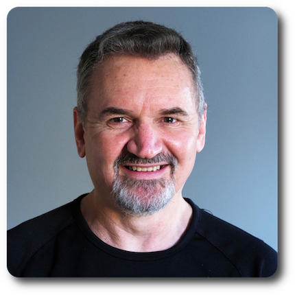

|  |
|
Aug 2021 - present | MongoDB | Senior Software Engineer |
Jan 2020 - Jun 2021 | Jet Engineering | Senior Software Engineer |
Jan 2019 - Dec 2019 | Bank of America | Scala Contractor |
Feb 2007 - Dec 2018 | Oracle | Principal Software Engineer |
Apr 2001 - Jan 2007 | Sun Microsystems | Software Engineer |
Apr 2000 - Feb 2001 | TradeRoot Technologies | Software Engineer |
Mar 1999 - Mar 2000 | NCrypt Systems | Software Engineer |
Nov 1995 - Feb 1999 | TranSwitch Services | Software Engineer |
Jan 1993 - Sep 1995 | Denel Informatics | Senior Programmer |
Aug 1989 - Jan 1991 | Sasol | Electronic Technician |
Aug 1987 - Jun 1989 | South African Air Force | Trainee Technician |
2005 | University of South Africa | BA (Bachelor of Arts) in Spanish and Geography |
1992 | University of Cape Town | BSc (Bachelor of Science) in Computer Science |
1989 | Pretoria Technikon | National Diploma in Electrical Engineering |
1985 | Montana High School | National Senior Certificate |
2009 | Oracle | Assertive Communication |
2009 | Oracle | Influencing Skills |
2006 | Sun Microsystems | Dynamic Performance Tuning & Troubleshooting with Dtrace |
2003 | Sun Microsystems | Advanced Perl Programming |
2003 | Sun Microsystems | Basic Perl Programming |
1996 | Sybase (SA) | Introduction to SQL & Fast track to Sybase |
1995 | Apollo Training | NeXTSTEP Programming |
1994 | Apollo Training | Unix Systems Administration |
1994 | Apollo Training | Unix Bourne Shell Programming |
1994 | Infoplan | Unix Fundamentals |
1994 | Infoplan | Unix Awareness |
1993 | Incus Data | C++ Programming |
1993 | Incus Data | Advanced C Programming |
1990 | Sasol | Team Oriented Problem Solving |
2019 | Parallel Programming |
2019 | Functional Programming Design in Scala |
2019 | Functional Programming Principles in Scala |
2006 | Diploma de Español como Lengua Extranjera (Nivel inicial) |
2006 | Sun Certified Programmer for the Java 2 Platform, Standard Edition 5.0 |
2005 | First Aid Certificate |
2001 | BrainBench Master Certification in Java 1 (Public ID: 2267068) |
1998 | Sun Certified Programmer for the Java Platform (JDK1.1) |
| Programming | Extensive initial C experience (with some C++ and Objective-C) moving to Java then Scala, and now focusing on Golang |
| Scripting | Regular Bash scripting and limited Python experience |
| Command-line tools | Everyday experience using find, grep, vim, etc. with Regular Expressions |
| IDEs | JetBrains IntelliJ |
| Build tools | Make, Autotools, Ant, Maven and Bazel |
| Version control | RCS, SCCS & Teamware, CVS, Subversion and Git |
| CI/CD | Cruise Control, Jenkins and in-house systems |
| Networks | Extensive experience using TCP, UDP and serial ports. Wrote Ftp and Smtp client-side implementations. Worked on large communication event frameworks. |
| Input/Output | Extensive experience with I/O streams, including developing custom streams. |
| Databases | Developed systems using JDBC to interface to Sybase and Oracle databases. |
| Distributed systems | Researched and prototyped systems using RMI, CORBA and Sockets. Used serialization to package and send objects to remote machines. Studied XML and used DOM and SAX parsers. Wrote custom classloaders. Worked with Grid Engine and in-house distributed processing systems. Built Docker containers and deployed under Marathon and Mesos. |
| Security | Studied the Java security model. Developed an SSL implementation from scratch. |
| Java Native Interface | Used JNI on various projects at Sun Microsystems. |
| Graphical User interfaces | Extensive experience building applications with both AWT and Swing. Wrote software to display and print barcodes. Worked on porting AWT to various native toolkits. |
| Web applications | Built web applications using JSF, then started learning Oracle JET. |
| Web services | Built web services in Java using plain Servlets as well as Jersey, getting familiar with JSON in the process. Designed Microservices with Swagger Editor and implemented them using Hibernate on the backend and tested using Postman. |
| Resilience | Add circuit-breakers to a large Java system for higher throughput. |
| Instrumentation | Export system, JVM and application metrics from Java applications in Prometheus format, to be displayed in Grafana. |
I also led a project from start to finish on their mongocli product,
where I got my first experience of programming in Go.
This required me to take an existing product description document to write a scope document,
followed by a specification document and then implementing the specification with two other engineers on the team.
It also necessitated reaching out to other engineers across teams to get their input along the way.
Jet Engineering (January 2020 - June 2021)
I joined the Merchant Intelligence (MINT)team at Jet Engineering, which had recently been acquired by Walmart.
The MINT team does backend work gathering data about competitor retail prices in order to provide fresh information to decision makers in the Pricing team.
The areas I worked on include:
This involved getting familiar with "big data" that is "sqoop'd" daily from various sources in the bank, into "triplet" data structures (subject-predicate-object) that can be queried using Apache HiveQL, and then writing Scala code to implement batch queries to be run on Spark, via an in-house Scala library.
Having delivered all required reports by the original Brexit Day (29 March), I was assigned to
a team working on a large system that processes and stores Vendor feed data in a more traditional
architecture, based on Oracle databases and Java.
Oracle (February 2007 - December 2018)
I joined the Worldwide Product Translation Group at Oracle in February 2007 as Principal Engineer,
where I was placed in a team lead role.
My initial responsibility was to introduce the engineering team to modern tools for version control and build systems. More specifically, I moved the existing systems from Visual SourceSafe to Subversion, from Ant to Maven, and introduced continuous build systems such as Cruise Control and, later, Jenkins.
My first development project was to take an early research prototype of a lint-like translation analysis tool and bring it up to production quality by refactoring the source code and bringing it more in line with actual customer requirements.
I took the lead for the development of a customer portal, consisting of web and GUI front-ends for various translation tools, guiding and mentoring other programmers, taking responsibility for the project schedule, involving estimates, planning, liaising with the Quality Assurance team and internal stakeholders for user acceptance testing.
I also contributed to the development of a comprehensive terminology management system, programming some key features such as user authentication using Oracle Single Sign-on, and importing and exporting terms from and to spreadsheets.
I then worked on an advanced pseudo-translation tool for the customer portal, and the backend architecture to make it scale across machines in a cluster using in-house developed technologies and Grid Engine.
My focus shifted towards the core translation platform when I developed SGML- and XML-based parsers to migrate translation content to our in-house system after Oracle acquired Sun Microsystems.
During my last few years at Oracle I was mostly involved in developing web services around the translation workflow, as well migrating a monolithic, enterprise web service to a more microservices-based architecture.
The last project I worked on centered on developing microservices for backend Machine Learning
in the field of Machine Translation, evaluating engines in terms of performance and quality of results.
The microservices were deployed as Docker containers and scaled using Marathon with Mesos on the backend.
I also migrated our microservices source code from Subversion to Git.
Sun Microsystems (April 2001 - January 2007)
During almost 6 years at Sun Microsystems in Ireland I worked on the Java platform, the Desktop group and the Sun Ray team.
I did an in-depth study of Secure Sockets Layer (SSL/TLS) and developed a proof-of-concept client-side implementation to provide HTTPS support for J2ME Personal Profile. This also involved getting familiar with the Java 2 security model, including interoperability with the Java Secure Sockets Extension (JSSE) and the Java Cryptography Extension (JCE).
I familiarised myself with the build system (Make) and source code version control system (SCCS with Teamware), contributing to the maintenance of the makefiles, creating and merging workspaces, taking responsibility for the nightly and weekly bring-overs between the Europe and US offices and ensuring that the nightly builds succeeded.
I developed and maintained a suite of automated performance benchmark tests to ensure that we met the required memory/speed limitations of the target platform and to detect any performance regressions early. I also assisted our technical writer with the programmer's guides, for which I developed a suite of demonstration programs to illustrate a wide range of our product features.
I was responsible for ensuring that all our source code contained the appropriate copyright notices and licenses, that all Java code was indented according to the Sun coding guidelines, and that all code was "scrubbed" to detect any inappropriate language before release.
My initial development projects involved mostly Java programming: I did some Servlet development for the JDS patch system whereby customers could perform online updates of their JDS Linux installations. Then I developed a GUI-based product registration application for JDS, ensuring that it was internationalised and complied with export regulations.
Thereafter I became more involved in GNOME development, writing a gnome-vfs module for Network Places, and patching the Nautilus file manager to use it.
We used CVS for source code control and Make with Autotools to build applications. I learned the package management system, wrote RPM spec files to build RPM's and used Diff to create patches. I became involved in a project to investigate various Debian-based Linux systems, documenting the install procedures, as well as comparing the Debian package management tools with RPM's, and documenting how they would fit into the JDS patch system.
I evaluated Wiki systems so that our group could create and share documentation in a collaborative way. We settled on TWiki, which I installed, configured and administered for the group.
Thereafter I was involved in designing and running network bandwidth performance tests to measure the size and speed of network traffic between Sun Ray servers and clients when running JDS. This involved collecting metrics using the command-line tcpdump utility while performing specified, repetitive user-interface tasks, and displaying the results graphically.
Thereafter I became involved in developing web applications in Java, specifically
to develop a new web-based user interface for Sun Ray servers, running on Apache's Tomcat
server.
This involved working with Servlets, Java Server Pages (JSP) and
Java Server Faces (JSF) technologies on the server, and HTML with Cascaded
Stylesheets (CSS) and JavaScript on the client.
I made extensive use of the Java Native Interface (JNI) to access native
C libraries. I started using Subversion in place of CVS for source code control, and Ant
in place of Make to build the product.
TradeRoot Technologies (April 2000 - February 2001)
In April 2000 I joined Inference Technologies, which has since become part of
TradeRoot.
I worked as a Java developer on a framework for building electronic commerce systems that integrate proprietary payment protocols with the ISO8583 EFT protocol. The work involved extensive use of Java threads and network communications using TCP, UDP and serial ports. I worked on Java code to interface with various hardware devices such us Schlumberger PIN pads, FastNet radio pads to connect to a wireless X.25 network, and Pandora ether pads to communicate with serial devices on a LAN. I also did user interface programming in Swing and used XML to a limited degree.
In addition to Java development, I was responsible for version control and
the build system, and I ensured that all our source code complied with the Java
coding standards as specified by Sun Microsystems.
NCrypt Systems (March 1999 - March 2000)
In March 1999 I joined NCrypt Systems, a startup company in the field of computer data security.
I was involved in research and development work on distributed object technology
in Java involving CORBA, RMI, object serialization, sockets and
custom classloaders. I also undertook the task of training and mentoring a team of
new graduate developers, and in the process I developed an in-house Java
training course, which covers the fundamentals of the Java programming language.
TranSwitch Services (November 1995 - February 1999)
In 1995 I joined TranSwitch Services, a joint startup venture between retail giant
Pick 'n Pay, South Africa's largest bank
ABSA and
Mosaic Software that grew out of PayNet, the pioneers in retail electronic funds
transfer (EFT) in South Africa.
I was responsible for the architecture, design and implementation of the EasyPay system. Much of the work I did involved "data-crunching": parsing and generating data in various formats, such as COBOL-style fixed length file formats, comma-separated ASCII text files and EDIFACT files, and storing the processed data in a database. I also ensured that files were received and delivered by various means: X.25, FTP, email, hand delivery of magnetic tapes, etc.
I dealt with a variety of clients and vendors of point-of-sale and billing systems, with whom I discussed and agreed upon file exchange formats and infrastructure, set up test cycles and coordinated their inclusion into the production system. The EasyPay system went live on 1 June 1997 and processed more than 6 million payments in the first 18 months.
In addition to the core EasyPay system, which had to be done in C, I developed some peripheral utilities in Java to assist the operators and administration staff. This exposed me to network programming with TCP/IP sockets, implementing FTP and SMTP functionality in standalone client GUI applications and accessing databases using JDBC. A also wrote a Java applet to generate and print Barcodes.
In 1998 I started teaching Java beginner classes in the evenings at KryptoPlus,
a startup training company in my local neighbourhood.
Denel Informatics (January 1993 - September 1995)
In 1993 I started working for Denel Informatics as a junior C programmer on a store-and-forward
routed messaging system.
This exposed me to a wide variety of technologies as the system had to run on a range of operating systems (MVS, Unix, OS/2, WindowsNT, DOS), interface with different databases (IDMS, DB2, Sybase, Oracle, C-Tree, Paradox) and use various methods of file transfer (XCOM, TCP/IP, Floppy). In less than 3 years I had worked myself up from Junior to Senior Programmer in the team.
In 1995 I joined the company's Object Oriented products team, who were the official distributors
of NeXTSTEP in South Africa. I learned to program in Objective-C and used tools such as
InterfaceBuilder on the NeXTSTEP platform, now the core operating system and development
platform on Apple computers.
University of Cape Town (1991 - 1992)
Having completed the first year of a BSc part-time, Denel Informatics granted me a scholarship
to complete my BSc full-time at the University of Cape Town:
| First Year | Second Year | Third Year |
|---|---|---|
| Computer Science | Computer Science | Computer Science |
| Mathematics | Mathematics | Astronomy |
| Economics | Applied Mathematics | Logic |
| Business Economics | Statistics |
Being an academic institution, the focus was more on computer science theory than programming. However, in order to apply the theoretical knowledge obtained, the university chose Unix and C for all practical programming projects. My first major C programming project was a course scheduling system, for which I obtained 93%. Other projects, for which I achieved an average mark of over 80%, included implementing data structure algorithms, such as linked lists and height/weight balanced binary trees, writing a database relational algebra optimizer, and implementing scheduling and memory management modules for a virtual operating system project.
The computer science courses consisted of modules in:
|
|
I was part of a team that worked on Honeywell TDC4500 mainframe computers monitoring
the Sasol 2 & 3 petro-chemical plants.
I gained experience in fault diagnosis and the repair of central mainframe computers
and peripheral devices, such as hard disk drives, colour display units, printers,
networks and much more.
During that period I took an interest in software development and studied part-time
towards a BSc in computer science at the University of South Africa.
South African Air Force (Aug 1987 - Jun 1989)
During 2 years of compulsory National Service I was assigned to the Research and Development
department of 4 Air Depot in the South African Air Force.
I was responsible for the layout and manufacture of printed circuit boards.
I also designed and built various electronic devices, such as power supplies and
various discrete digital circuits.
During this time I gained experience in project estimates using Gant charts and
status reporting.
The work I did satisfied the requirements for the practical part of my Electrical
Engineering Diploma, which I received in 1989.
Pretoria Technikon (1986 - 1987)
After school I studied Electrical Engineering at the Pretoria Technikon, now called the
Tshwane University of Technology, where I completed
the theoretical part of the National Diploma in Electrical Engineering with the following
subjects:
| First Semester | Second Semester | Third semester |
|---|---|---|
Electronics * | Electronics | Electronics |
Digital Systems * | Digital Systems | Digital Systems |
Engineering Mathematics * | Engineering Mathematics * | Engineering Mathematics * |
| Industrial Instruments | Industrial Instruments | Industrial Instruments |
Electrical Engineering * | Electrical Engineering | Automatic Control |
| Communication | Programming | Television |
| Subject | Grade | Mark |
|---|---|---|
| English | Higher | B (71-80%) |
| Afrikaans | Higher | C (61-70%) |
| Maths | Higher | B (71-80%) |
| Science | Higher | C (61-70%) |
| Accounting | Higher | B (71-80%) |
| Economics | Higher | D (51-60%) |
| First Year | |
|---|---|
SSP100-D | Spanish special |
GGH101-Q | Know your world: introduction to geography |
GGH102-R | World issues: a geographical perspective |
ECN100-F | Economics |
PHL100-B | Philosophy |
PSY100-X | Psychology |
| Second Year | |
SPN211-R | Spanish |
SPN212-S | Spanish |
GGH201-T | The African challenge: people and environment |
GGH202-U | The geography of basic services provision |
GGH203-V | The interpretation of maps, aerial photos and satellite images |
GGH204-W | People and the natural environment: use and impact |
GGH205-X | Environmental Politics |
PSY211-8 | Psychology |
PSY212-9 | Psychology |
LOG201-5 | Logic |
LOG202-6 | Logic |
| Third Year | |
SPS301-H | Spanish for translation |
SPS302-J | Spanish for oral communication |
SPS303-K | Spanish for professional purposes |
SPS304-L | Encounters with Spanish American culture and literature |
SPS305-M | Reading and analysing texts in Spanish |
GGH301-W | State of the people and environment in Southern Africa |
GGH302-X | Spatial economic development |
GGH303-Y | Introduction to geographical information systems (GIS) |
GGH304-3 | Development of urban space |
GGH305-4 | Environmental evaluation and impact assessment |
I also completed the following modules at the University of South Africa as part of a BCom (Bachelor of Commerce) in Quantitative Management in order to complement my technical software engineering skills with some business and management skills:
ECS1016 | Economics | Economics 1A |
ECS1028 | Economics | Economics 1B |
MNB101D | Business Management | Business management 1A |
MNB102E | Business Management | Business management 1B |
INM1013 | Introduction to the economic and management environment 1A | |
INM1024 | Introduction to the economic and management environment 1B | |
ACN101M | Accounting | Accounting concepts, principles and procedures |
ACN102N | Accounting | Accounting reporting |
DSC1620 | Quantitative Management | Mathematical modelling I |
DSC1630 | Quantitative Management | Introductory financial mathematics |
STA1501 | Statistics | Descriptive statistics and probability |
EHY201W | Economic History | Economic History of the World 2 |
ECS201A | Economics | Microeconomics 2 |
ECS202B | Economics | Macroeconomics 2 |
When I worked at SASOL I was a member of the Secunda Hiking club, where I regularly took part in weekend hikes, led a few hikes and served on the committee.
At University I belonged to the Mountain and Ski club, regularly partaking in hiking activities, social gatherings and contributing to the annual club magazine.
While working in Cape Town I attended some meetings of the Cape Town Linux User Group, and was involved in setting up a Cape Town Java User Group.
In 2005 I took a supervised IQ test and, having passed the entrance requirements, was invited to join the British/Irish Mensa Society.
In the pre-COVID years I was an active member of the Dublin Argentinian Tango Society, and I DJ'd at tango events in Dublin, across Ireland and Europe and even further afield.
Running, Cycling & Rollerblading - I started running in 1996, and have since run a few marathons and the Two Oceans ultra-marathon. In 1998 I did the 105km Argus cycle tour on my mountain bike. Since living in Ireland my sporting activities have been limited to roller-blading and cycling, though I did manage to finish the 2004 Dublin Marathon
Watersport - When in South Africa, I take to the sea with my bodyboard and wave-ski. In 1995 I did the NAUI Open Water I scuba diving course, completing my qualifying dives at Sodwana off the South African east coast. I dived at Knysna to see the Knysna Sea Horse, among Ragged Tooth sharks at Shark's Gulley near Port Alfred. More recently I have snorkeled in the Red Sea with my son, and we completed the PADI Open Water Diver scuba certification.
Gardening - I am the most relaxed in the outdoors when gardening. Whenever I return to South Africa on holiday, I continue work on establishing an indigenous garden in Betty's Bay near Cape Town.
Tango - I started taking Argentinian Tango dance lessons in 2008, and have subsequently developed a strong love for the dance, the music and Argentinian culture. In order to improve my dancing further, I have collected and listened to tango music extensively as I build a reputation as Tango DJ at milongas and tango festivals all over Ireland, Europe and further abroad. I have visited various cities to dance and DJ: Prague, Barcelona, Edinburgh, London, Berlin, Amsterdam, Moscow as well as Buenos Aires.
Music - With my passion for Tango I picked up my clarinet again to play some of the classic old Tango music. I selected a few of my favourite songs and started using the Open Source MuseScore to transfer sheet music and arrange and transpose it for clarinet. I play the pieces with musician friends in Dublin and with community tango orchestras in other European cities when I travel to festivals.
Photography - I chose the Olympus Micro Four Thirds camera system, which I have used to photograph some of my travels and tango dance events.
Petanque - Since COVID has curtailed my Tango activities, I have taken up the pasttime of "French Boules", also known as "Petanque", which I am able practise in a social distancing manner in Dublin parks.
As part of my Spanish studies, I have read a number of Spanish books, short stories and essays by authors such as Gabriel Garcia Marquez, Garcia Lorca and others.